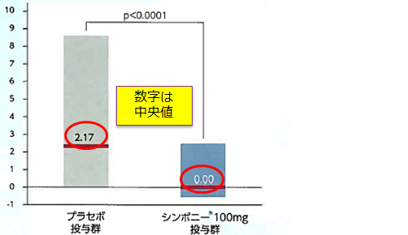
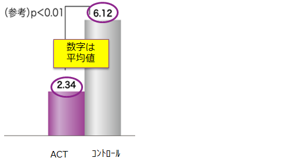
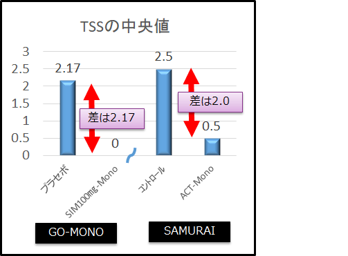

５．SIMは適応症に「関節の構造的損傷の防止を含む」があり、関節破壊への有効性も認められています。
- ●GO-MONO Study（Mono）
- ●罹病期間：約8-9年
- ●CRP(mg/dL) ：2.2-2.5
- ●DAS28-ESR：5.8-6.0
SIM 52週時のTSS

- ●SAMURAI Study（Mono）
- ・罹病期間：約2年
- ・CRP(mg/dL) ：4.7-4.9
- ・DAS28-ESR：6.4-6.5
ACT 52週時のTSS


両方の試験を中央値で比べると、、、
プラセボとのTSSの差はほぼ同じ

SIMも国内でMTX併用・非併用ともに骨関節破壊のデータを持つが、平均値ではなく中央値で示していることに注意！
同じ中央値で比べた場合、ACTのSAMURAI Studyと総シャープスコアの改善度は同等である
→SIMの関節破壊抑制効果が高いとは言えない